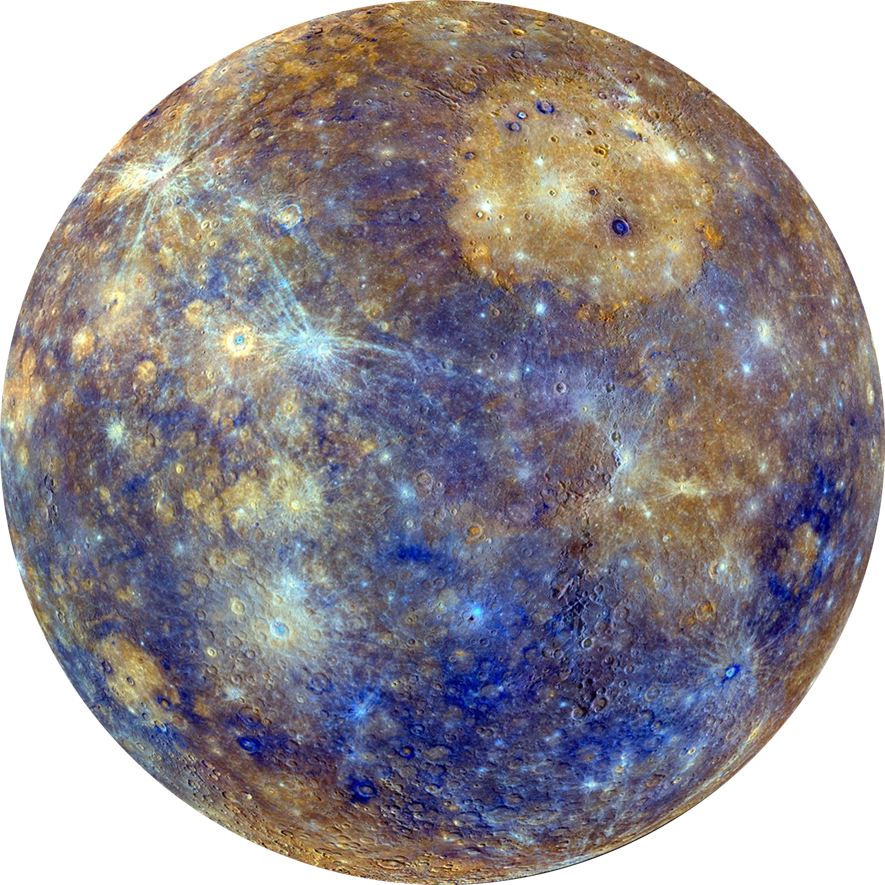

Mercúrio apresenta uma órbita altamente elíptica no Sistema Solar,
sendo o planeta mais próximo do Sol.
Sua distância do Sol varia entre 47 milhões e 70 milhões de
quilômetros devido à sua órbita peculiar.
Acessar Mercúrio é desafiador devido às instabilidades climáticas,
temperaturas extremas e sua órbita peculiar.
Estudos revelaram que a falta de inclinação em relação ao Sol permite
a formação de gelo nas crateras durante a noite.
Mercúrio possui uma atmosfera instável e fraca em comparação com a Terra,
devido à proximidade com o Sol e à influência dos ventos solares.
Não há presença significativa de atmosfera, luas e anéis ao redor de
Mercúrio devido à sua proximidade com o Sol.
Mercúrio não possui estações do ano devido à ausência de inclinação em sua órbita.
As missões das sondas Mariner e Messenger forneceram informações importantes
sobre o planeta, mas ainda existem muitas perguntas sem resposta sobre Mercúrio.
